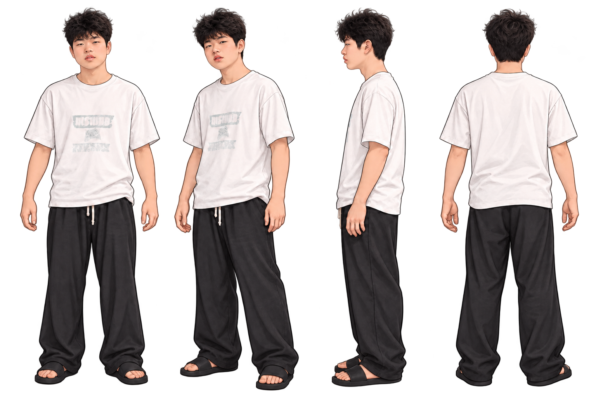

拳脚，先讲道理
贴近目标连续出招，配合跳跃躲避水平子弹。移动方向由你实时控制，自动锁敌可在设置中关闭。
独立梦境格斗 VOL.01 / 十重试炼
起床气，才是你的终极武器。
《拖鞋战神》是一款用拖鞋打穿梦境的搞怪格斗游戏。
脚气惊动守梦人，拳脚与飞鞋开路，打穿十位首领才能醒来。

HOW TO PLAY / 战斗手册
左手走位，右手出招。每一次回收，都是下一次反击。
贴近目标连续出招，配合跳跃躲避水平子弹。移动方向由你实时控制，自动锁敌可在设置中关闭。
点按按默认轨迹飞出；长按滑动，沿虚线调整抛物线。回程同样伤敌，灵活发射与回收。
狂暴持续15秒，攻击更猛、范围更广、跳得更高。平时回复20%生命，濒死红血时回复30%。
IN-GAME / 战斗实机
当前版本战斗引擎场景演示。点击画面可放大查看角色、装备与特效。
DREAM EQUIPMENT / 收集与搭配
第3、6、9关获得新装备。回到首页的装备入口，自由选择已收集的拖鞋。
甩出、回收，朴实的双向问候。
往返冻结1.6秒，每只召回需2秒。
投出立即可引爆，范围伤害并击飞。
持续灼烧2秒，每秒40点；狂暴增伤20%。
TEN TRIALS / 十重梦境
从遗忘街角到清醒之门，每一关都有不同的梦境首领。
已通关的关卡可随时重玩，收集装备，再挑战一次。
ENTER THE DREAM / 开始你的试炼
安卓手机 / 平板 · 横屏 · 免登录 · 本地存档
Android 8.0 及以上 · 正在读取版本信息
下载 APK ↓下载后打开 APK，按安卓提示安装。
已有旧版请覆盖安装，保留本机进度；请勿先卸载。
包名：com.slipperdream.fury
手机扫码下载
打开游戏官网，下载最新安卓版本。
PATCH NOTES / 梦境更新
BEFORE YOU JUMP IN / 常见问题
《拖鞋战神》是由JohnET制作的二维单人格斗游戏。主角在十重梦境中与守梦人对战，使用拳脚、可回收的飞拖鞋、元素装备与爆衣狂暴技能。安卓横屏，下载后可离线游玩。
游玩无需登录，完整游戏内置在安装包中。反馈提交、检查更新和下载新版需要网络。玩家编号、昵称与关卡进度保存在本机。
在设置中选择720P和极简画质。可减少粒子、纹理和光晕。默认1080P，也可选择2K。
安装带版本检查的新版后，联网启动时可发现更新，也可在设置中手动检查。下载同签名新版覆盖安装；卸载或清除数据会丢失存档。
点击游戏首页的账号图标，修改昵称或提交反馈。反馈会附玩家编号、昵称、游戏版本和服务器时间，仅管理员可查看。